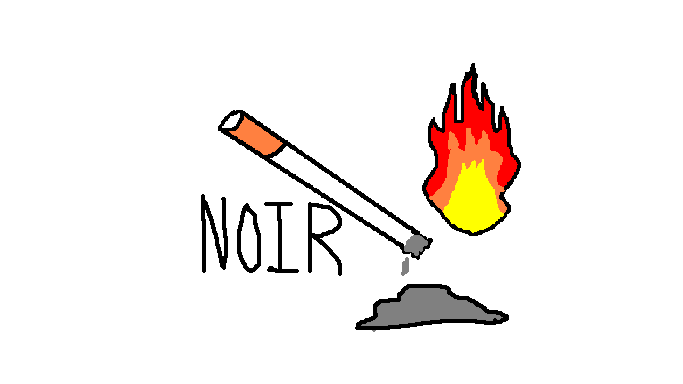

Projects in Progress
Covers and short synopses for projects I want to develop. These are very early concepts, each is something that I want to work on in the future down the line.
Media and Meaning
The media that you consume on a daily basis and choose to follow or believe in changes how you see the world around you. It can effect the smaller details that you pay attention to or choose to ignore. I think that media has been able to put different lenses on people's outlook on life.
Music in Film
A look into how music effects film and how it is used to elevate scenes. The mixing of the two mediums has been around for quite a while, yet some directors seem to miss the mark when choosing styles and tones of music in film. Why is that and how do they choose what songs?

Dim Haze in Vienna
I would want to write a noir detective story that sets place in Europe during the 1950's.